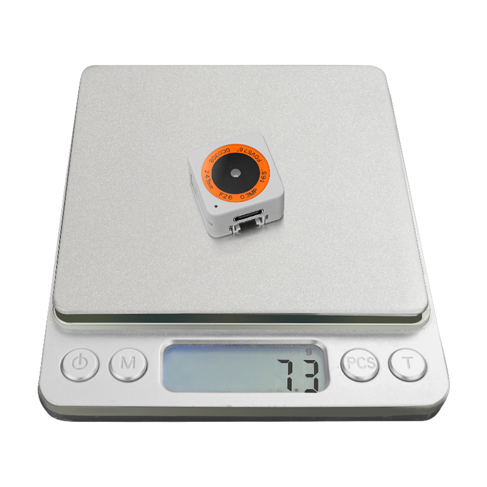

Guide · ESPHome
ESP32-CAM with Home Assistant: setup, limits, and picks
Is the 3D printer still printing or making spaghetti? Did the shed door blow open? Is that a package on the porch or just the neighbor's cat again? You don't need a full security camera setup for questions like these. A tiny ESP32 camera board and ESPHome will do it, with no cloud, no app and no account.
Just know what you're buying: a small sensor on a microcontroller, sending JPEG frames over Wi-Fi. Great for a quick peek. Wrong tool for overnight security.
How it works
You flash the board with ESPHome. Its esp32_camera component shows up in Home Assistant as a normal camera entity over ESPHome's native API. No MQTT broker, nothing leaves your network.
- Pick a board that has a ready-made example in the ESPHome docs (list below). Copying a working pin map beats working one out yourself.
- In your YAML, enable
i2candpsram, then add theesp32_camerablock from the example. The component needs both. - Flash over USB the first time, then over Wi-Fi after that.
- Adopt it in Home Assistant and drop the camera on a dashboard, or grab a snapshot when a door sensor opens.
What it can do
Per the ESPHome docs, the default is 640x480 at 10 frames per second. When nobody is watching, it drops to an idle 0.1 fps, which keeps it cool. You can push it to 60 fps at smaller frame sizes, but the docs warn about overheating. Resolution can go much higher, depending on the sensor.
In other words: it wakes up, shows you a picture, and goes back to snoozing. Perfect for a printer cam. Not a 24/7 recorder.
Which board?
ESPHome publishes example configs for the Ai-Thinker ESP32-CAM, several M5Stack cameras, TTGO T-Camera boards and Espressif's ESP-EYE, among others. Three good picks:
- Ai-Thinker ESP32-CAM: the budget classic, with an OV2640 2 MP sensor. Give it a solid 5 V supply (weak power causes boot loops) and don't use GPIO16, which the ESPHome docs say is wired to the onboard PSRAM. Ai-Thinker ESP32-CAM on Amazon
- M5Stack M5Camera-F New (U037): a neater package with a 2 MP OV2640 behind a 150° fisheye lens, plus 4 MB of PSRAM, per M5Stack. M5Camera-F on Amazon

- M5Stack AtomS3R-CAM (C126-CAM): tiny at 24 x 24 x 13.5 mm, with an ESP32-S3, 8 MB of PSRAM and a 0.3 MP GC0308 sensor, per M5Stack. Low resolution, but it hides anywhere. AtomS3R-CAM on Amazon

Gotchas
- PSRAM isn't optional. The component needs it, and JPEG mode needs it too.
- PWM clash. The camera uses PWM timer 1. If you add an LED or buzzer on
ledc, setchannel: 2, per the docs. - Heat. ESPHome warns that the original M5Stack Camera board has poor cooling and overheats over time. Give any of these boards some airflow and let the idle frame rate do its job.
When to get a real camera instead
ESPHome's camera shows you a live picture. It doesn't record or detect anything. If your real question is "who walked up the driveway at 3 a.m.?", you want Frigate, a local video recorder with object detection, and a wired IP camera. Frigate's hardware docs say Wi-Fi cameras are not recommended, so an ESP32-CAM is not a Frigate camera.
The ESP32-CAM's real superpower: it's a gateway drug. Flash one camera and you'll be flashing sensors all over the house by next month. Our ESP32 projects list is a good next step, and ESP32-C6 vs S3 explains why the S3 is the camera chip of the family.
- Primary sources
- ESPHome esp32_camera component; Frigate Home Assistant integration; Frigate hardware; M5Stack M5Camera-F New; M5Stack AtomS3R-CAM
As an Amazon Associate, HA News earns from qualifying purchases.